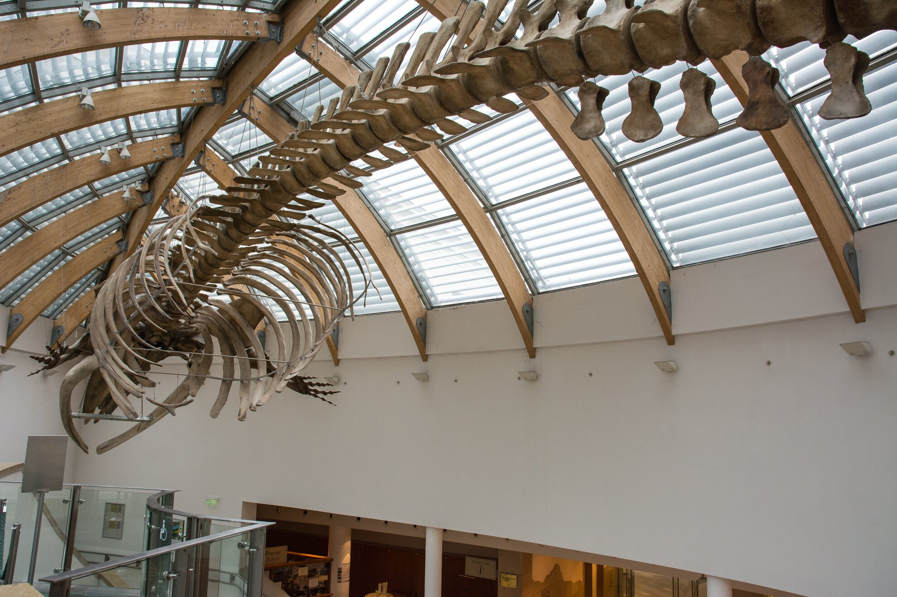

Osztályfőnök terve
- Gyülekező: 2023. 05. 08. 8.00-8.15, Debrecen vasútállomás
- Személyi igazolvány, lakcímkártya, diákigazolvány.
- Első napra: hideg ebéd, víz/tea/üdítő. Tisztálkodási szerek, pizsama, papucs, 1 váltás ruha. Telefon, zsebpénz (kb.5000 Ft, de ezt mindenki maga dönti el!).Program: 8.35-11.30 utazás Bp-re.
11.30-15.00 csoportos BKK jegy megváltása, Parlament körüli séta, Duna part, hideg ebéd elfogyasztása, séta a Margit szigetre, bevásárlás a reggelihez, sziget nevezetességei.
15-15.30 16.30 Budai várnegyed bejárása, nevezetességek megtekintése. 19.00 vacsora Mákos guba bistro, Esti városnézés
- Kedd: 9.00 szállás elhagyása. 10.00 érkezés. Magyar Természettudományi Múzeumhoz. 13-14 indulás Nyugati pályaudvar 15.23 indulás vissza Debrecenbe.
